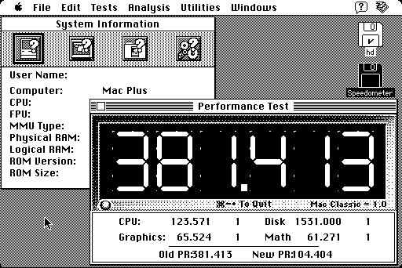

Download
speedometer3.23.zip (152K) Speedometer 3.23 repackaged into a zipped hfs disk image and checksum file. The disk image can be mounted with Mini vMac.
copyright: Scott Berfield
mod date: Apr 30, 1998
license: shareware
Benchmarks, including tests of CPU, Disk, Graphics, and Math.

If you find these downloads useful, please consider helping the Gryphel Project, which hosts them.
Here is the md5 checksum for the download, signed with Gryphel Key 5:
--------- GRY SIGNED TEXT --------- df307c18eb91aa9a33317676db532ffc speedometer3.23.zip ------- BEGIN GRY SIGNATURE ------- Gry/4Xa8CFcUzxdN/HLbWbdTnt8fFSGiGYSZtXqB2OMmLDznozXV/jWPzRc3YkER XlPh/8UWcd/jfmpRkK+Psuvkl/67SkpFyxlUbmqMDR3ROsVq6C3FlEwz8M8AGZ/v cEql/hMdPC3SxHhOc5u7uT4ORYiqTyEhN58JzSDCHi3G3LN9GjGc7x4LqcaURAYU -------- END GRY SIGNATURE --------